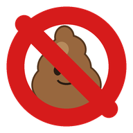

Fake & Dezinfo Alert
Verze 3.0 – Varování + Blokování
Nechcete už číst dezinformace
& fake news?
Zablokovat vše
Kliknutím na „Zablokovat vše“ budete při další návštěvě kteréhokoliv webu nebo YouTube kanálu ze seznamu konspiratori.sk přesměrováni na
konspiratori.sk.
Načítání stavu seznamu…
Zdroj dat: veřejná databáza konspiratori.sk (weby a YouTube kanály)
Další zdroje proti dezinformacím